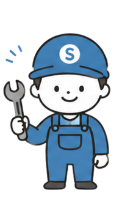
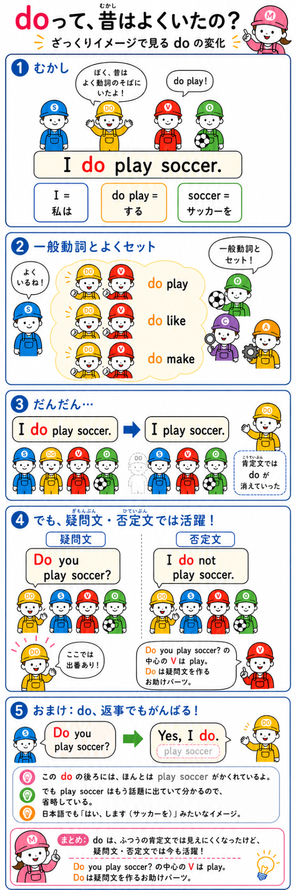

🔧 中学基礎 → 高校受験まで英文を、部品で
英文を、部品で
見抜けるようになる。
「なんとなく読む」を卒業。S・V・O・Cとお助けパーツを、仕分け・検品・組み立てしながら体で覚えよう。

工場の生産進捗
検品OK 0 / 16★ 0正答率 --
見習い作業員
生産ライン
基礎から順番に進むと、入試文まで迷子になりにくい。
「なんとなく読む」を卒業。S・V・O・Cとお助けパーツを、仕分け・検品・組み立てしながら体で覚えよう。

基礎から順番に進むと、入試文まで迷子になりにくい。
